Ejercicio 3 - Uso de
conmutadores virtuales en el ESX
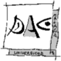
En el escenario del Ejercicio 2 hemos desplegado sobre el hipervisor
ESX los servidores Debiantomato
(sin y con separación de la base de datos) para su puesta en
explotación; sin embargo, resulta evidente que Debiantomato estaba
en la LAN interna, que es la misma a la que está conectada
nuestra máquina de desarrollo (el Windows 7), y que
correspondería, en la realidad, a la red interna (y
confidencial) de la empresa. Obviamente, ésta es una
configuración no segura, que nos obligaría a
abrir a accesos desde Internet a nuestra red interna.
Por ello, en este Ejercicio vamos a ver cómo el servidor ESX
nos permite (usando una segunda tarjeta de red y un conmutador virtual)
definir dos redes virtuales sin conexión directa ni
enrutamiento entre ellas, de forma que podamos desplegar el servidor de
producción Tomatocart en una red expuesta a internet, pero
adecuadamente aislada de la red interna.
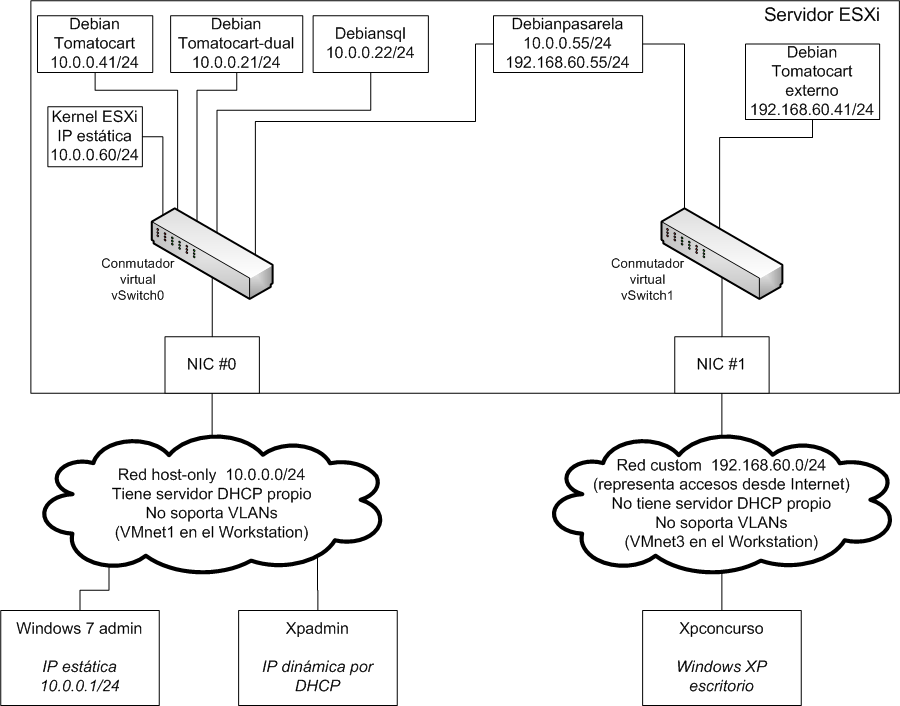
Como muestra el diagrama de la figura, el objetivo del Ejercicio va a
ser configurar las redes virtuales del servidor ESX para lograr una
configuración que ofrezca:
Una red interna, sin conexión
al exterior, de direccionamiento IP 10.0.0.0/24, a la que
tendremos conectados las versiones de prototipado de los servidores Debiantomato (con y
sin base de datos separada), además del Windows 7 y del XP
de administración del servidor ESX. Esta red interna
estará implementada por el conmutador virtual vSwitch0 en el ESX
y por la red virtual host-only (conmutador virtual) VMnet1 del VMware
Workstation.
Una red externa, expuesta a accesos desde el exterior,
donde tendremos la versión de producción del
sistema Debiantomato
usando un único servido. Esta red estará
constituída por el conmutador virtual vSwitch1 del ESX
y por la red virtual host-only (conmutador virtual) VMnet3 del VMware
Workstation. (NOTA: Aunque, por seguridad, usaremos una red host-only,
esta red externa simula la parte de nuestras redes que, en un sistema
real, estaría expuesto a internet.
Como las dos redes virtuales del ESX van a estar aisladas
entre sí, vamos a usar un servidor Debian con dos interfaces
de red (uno en cada red) para hacer de pasarela a través de
la cual poder administrar el Tomatocart de producción desde
la red interna.
Finalmente, un XP virtual, conectado a la red "externa" del
ESX, para poder probar cómo se vería el
Tomatocart de producción desde el exterior.
Para realizar el Ejercicio, seguimos estos pasos:
1) Si
está funcionando, apagar el servidor ESXi (por ejemplo,
usando F12
desde su
consola para hacer login, y luego pulsando F2).
2)
Necesitamos añadir al ESX una segunda tarjeta de red
(virtual). Abrir los
settings de la máquina virtual ESX y, en la
pestaña Hardware,
pulsar Add
3) Elegir Network Adapter, y
pulsar Next
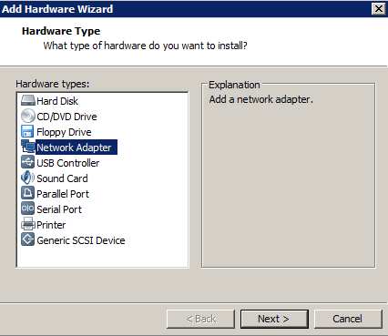
4) Elegir
una red Custom,
y seleccionar la red virtual VMnet3. Pulsar
Finish, y
después OK
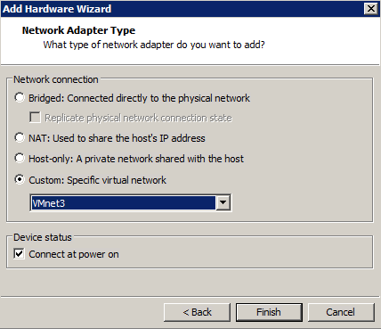
5) Si
examinamos con Notepad++ (sin modificarlo) el fichero D:\practicas\MV\ESX\ESX.vmx,
veremos al
final del fichero que se ha añadido la definición
de un nuevo interfaz de red virtual Intel E1000, ethernet1
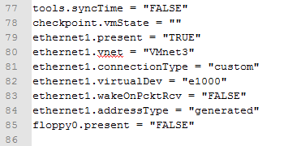
6) Cerramos
Notepad++ y arrancamos la máquina virtual ESX.
7)
Arrancamos el PC de administración, XPadmin, abrimos el
cliente de administración vClient, y hacemos login como root
8) En la
ventana de administración abrimos la pestaña Configuration y
seleccionamos la opción Hardware
-> Networking
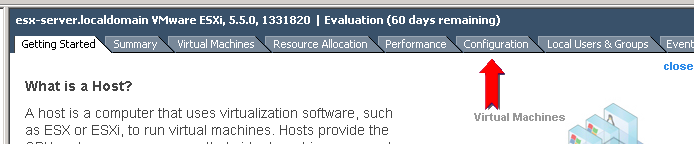
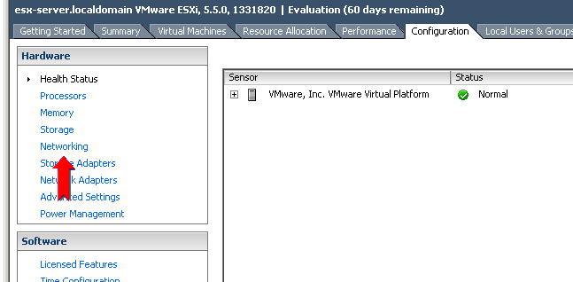
En pantalla se nos presenta la configuración de red actual
del ESXi, con un único interfaz de red (vmnic0) haciendo el
trunking entre la red externa (en este caso, VMnet1 en el
Workstation) y un conmutador virtual interno al ESXi, vSwitch0, que da
servicio a la red de gestión (observar que la IP del
servidor ESXi no está asignada al adaptador de red, sino al
núcleo del hipervisor). Observar que en la imagen se
muestran también las conexiones de los interfaces de red de
los servidores Debian que hemos desplegado en el Ejercicio 2
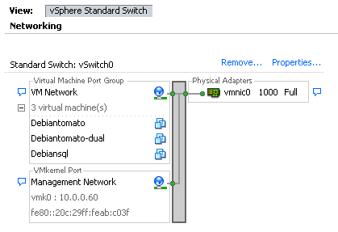
9) Vamos a
añadir a la configuración de red del ESXi un
segundo conmutador virtual, conectado a la tarjeta de red virtual que
hemos añadido al servidor. Para ello, pulsamos en Add Networking
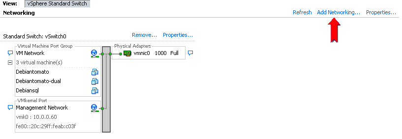
10)
Seleccionamos Virtual
Machine, y pulsamos Next
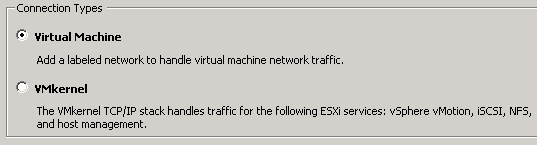
11) Crear un
conmutador estándar vSphere. Por defecto estará
conectado al interfaz de red vmnic1
(el que hemos añadido al ESXi), que aún no ha
sido asignado. Pulsar Next
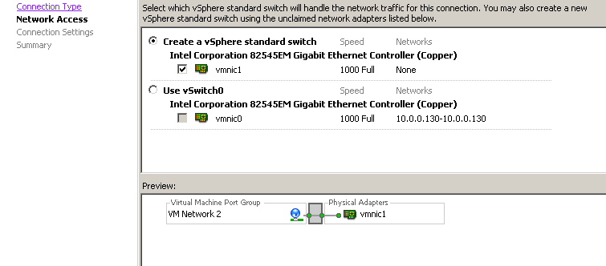
12) Darle a
la red virtual (Port Group)
el nombre Red exterior.
Pulsar Next,
y luego Finish
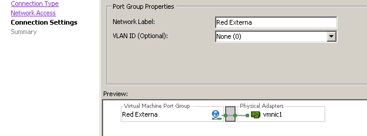
Al terminar el procedimiento la herramienta administrativa nos muestra
gráficamente la configuración de red resultante,
con las dos redes, conectadas cada una a su respectivo
conmutador virtual y tarjeta de red del ESXi.
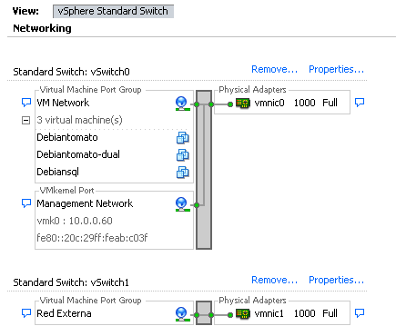
Ahora, vamos a desplegar en la red externa la copia de
producción del servidor Debiantomato
que tenemos en la red interna.
13) Crear,
en el escritorio del XPadmin,
el directorio OVA_debtomato.
14) En la
herramienta de administración del ESX, seleccionar el
servidor Debiantomato
e invocar el menú File
-> Export -> Export OVF Template. Salvar el
template con los parámetros mostrados en la figura, y pulsar
OK.
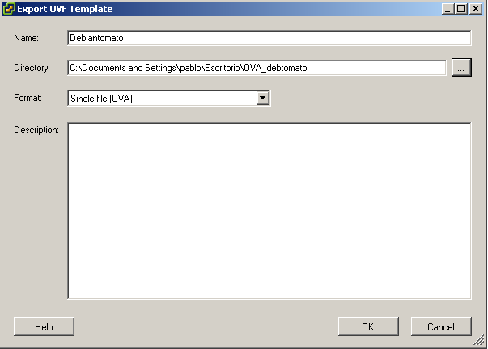
Como podemos ver al completarse la exportación, la
diferencia entre el formato OVF y el OVA es que, en éste
último, se usa un único fichero (de
extensión .ova), que actúa de contenedor de todos
los ficheros que, en el formato OVF, van sueltos.
15) De nuevo
en la herramienta administrativa del ESX, invocar File -> Deploy OVF Template.
Seleccionar OVA_debtomato\Debiantomato.ova.
Darle nombre Debiantomatoexterno,
y tener cuidado de configurarlo como disco thin.
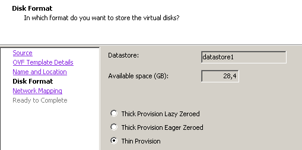
16) Conectar
su interfaz de red al conmutador virtual de la Red Externa, en
lugar de a la red por defecto (que es la interna)
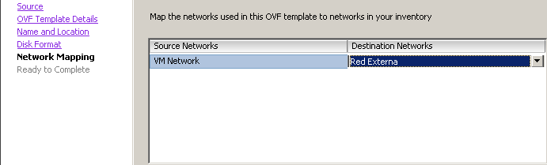
17) Con los
parámetros resultantes, mostrados en la figura, confirmar el
despliegue pulsando Finish.
18)
Necesitamos cambiar el direccionamiento de la máquina
virtual Arrancarla y, usando una ventana de consola, cambiar sus
ficheros /etc/network/interfaces
y /etc/hosts
a los valores mostrados en las figuras. Reiniciar la máquina
con reboot,
y comprobar con ifconfig
el resultado.
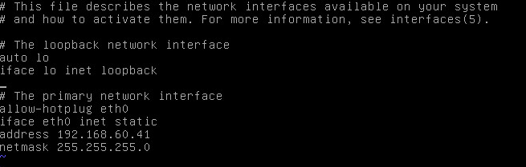
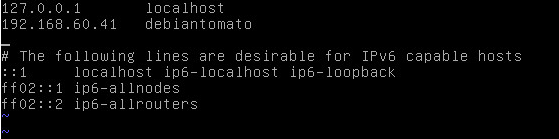
19) Cambiar
el fichero /var/www/tomatocart/includes/configure.php
a los valores mostrados en la figura.
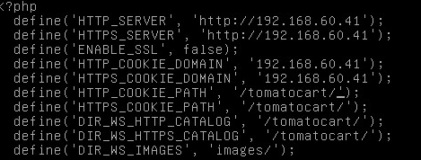
20) En la
herramienta de administración del ESX, arrancar los tres
servidores Debian de la red interna (Debiansql, Debiantomato,
Debiantomato-dual).
21) Desde el
Windows 7, haciendo ping,
comprobar que vemos los tres servidores de la red interna, pero no el Debiantomatoexterno
(192.168.60.11).
22) En el
Windows 7 arrancar la máquina virtual XPexterno(D:\practicas\MV\XPexterno\winxppro.vmx),
que está conectado a la red VMnet3 usando la IP
estática 192.168.60.60, y que representa una
máquina que accede al servidor de producción
desde el exterior. Comprobar, haciendo ping, que
vé a Debiantomatoexterno
(192.168.60.41), pero no ve a ninguno de los servidores de la red
interna. Comprobar también, usando su Firefox, que funciona
el sistema Tomatocart del servidor Debiantomatoexterno,
accediendo a http://192.168.60.41/tomatocart.
Con esto terminamos el despliegue del servidor Debiantomato
expuesto a la red exterior. Antes de continuar, vamos a ver
cómo de eficientes son los hipervisores VMware ESX y VMware
Workstation, viendo cómo de cargado tenemos el Windows 7, en
el que están corriendo simultáneamente todas
estas máquinas y funcionalidades:
El propio sistema operativo Windows 7.
El hipervisor ESX
Dos Windows XP
Cuatro servidores debian, que incluyen tres herramientas de
comercio electrónico y dos instancias de bases de datos
mysql.
Para ello, abrir el administrador de recursos del Windows 7, y mirar el
consumo de memoria y de CPU; encontraremos que, incluso con la cantidad
de máquinas virtuales que estamos corriendo actualmente en
el sistema, el consumo de recursos es
sorprendentemente reducido.
Ahora, una vez que hemos completado el despliegue de Debiantomatoexterno,
se nos presenta el problema de cómo administrar el servidor
(y probar su sistema Tomatocart) desde una máquina de la red
interna, que no tiene conectividad directa a Red Externa. La
solución será desplegar sobre el hipervisor ESX
otra máquina virtual Debian, que, usando dos interfaces
virtuales de red, estará conectada
simultáneamente a ambas redes virtuales del ESX, y que
usaremos para tunelizar los accesos desde un Windows de la red interna
a Debiantomatoexterno.
Para desplegar este servidor, hacemos lo siguiente:
23) Copiar
la carpeta D:\practicas\MV\OVA_pasarela
al escritorio de XPadmin.
24) En la
herramienta de administración del ESX, usar el
menú File
-> Deploy OVF Template. Seleccionar el fichero OVA_pasarela/debianpasarela.ova.
USando el procedimiento ya conocido, desplegar la máquina
virtual de nombre Debianpasarela,
con disco thin
y conectado a la red por defecto (VM
Network).
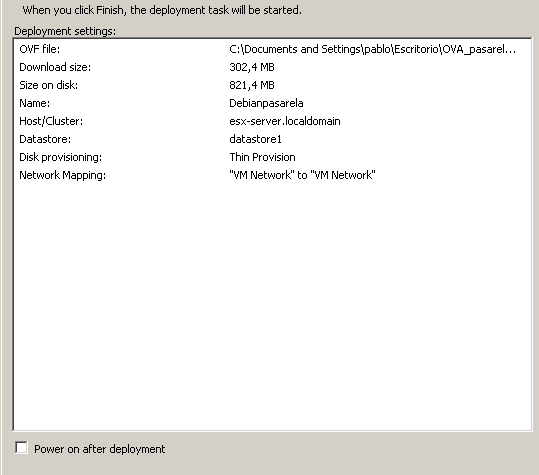
25) Una vez
desplegada, necesitamos conectarla también a la red externa.
Para ello, seleccionar Debianpasarela
y, en la pestaña Summary,
editar sus Settings.
En la pestaña Hardware,
pulsar Add
y seleccionar un adaptador Ethernet. Pulsar Next.
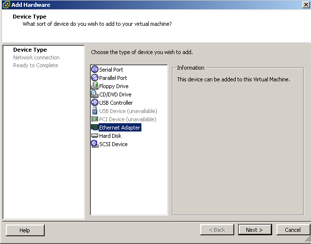
26)
Seleccionar un adaptador tipo E1000 (es decir, una tarjeta de red Intel
E1000, que es justamente el modelo que ya está usando la
máquina Debian en el otro interfaz de red). Seleccionar
conexión a la Red
Externa. Pulsar Next,
y luego Finish.
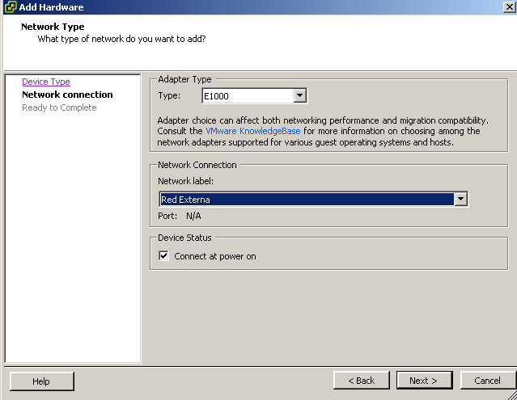
27) Pulsar OK para consolidar
la creación del segundo interfaz de red.
Como indican las notas de la máquina virtual, el template Debianpasarela
está configurado con la dirección IP 10.0.0.55.
Esta dirección corresponde al interfaz eth0, que es el que
está conectado a la red interna (VM Network).
Necesitamos configurar ahora su interfaz eth1 con una
dirección correcta de la Red Externa (en la que no tenemos
servidor DHCP y, por tanto, no puede dar automáticamente una
dirección IP a eth1).
28)
Arrancar Debianpasarela, seleccionarla, y abrir su ventana de Consola. Hacer login como root, y password deii15.
29) Si ejecutamos ifconfig sólo veremos listado el interfaz eth0. Sin embargo, ejecutando ifconfig -a
aparecen listados todos los interfaces de red, incluso lo que
aún no están configurados, y podremos confirmar que, en
efecto, tenemos un nuevo interfaz de red, llamado eth1.
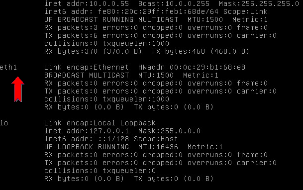
30) Editar el fichero /etc/network/interfaces y añadir las líneas que se muestran en la figura:
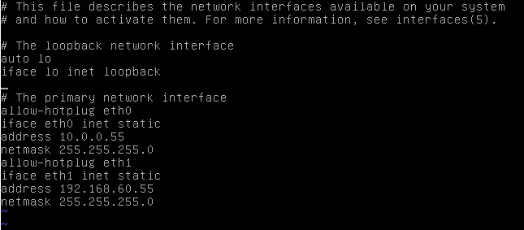
31) Editar el fichero /etc/hosts, añadiendo la línea mostrada en la figura.
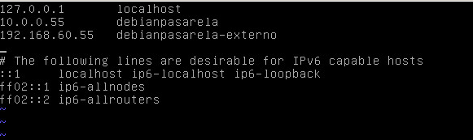
32) Reiniciar la máquina Debianpasarela, ejecutando reboot. Una vez reiniciada, volver a hacer login como root y ejecutar ifconfig para asegurarnos de que hemos configurado correctamente los dos interfaces de red.
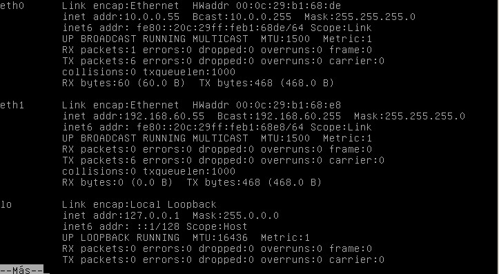
33) Hacer logout en la consola de Debianpasarela. Arrancar (caso de que no estuvieran ya andando) todos los demás servidores Debian (Debiansql, Debiantomato, Debiantomato-dual, Debiantomatoexterno).
Ahora, vamos a tunelizar el tráficoweb (HTTP y HTTPS) entre XPadmin y el servidor Debiantomatoexterno.
(NOTA: vamos a usar el XP de administración, en lugar del
Windows 7, porque necesitaremos modificar el fichero de hosts del
Windows, y el usuario practicas no tiene privilegios suficientes en el Windows 7 para poder hacerlo).
34) En XPadmin, ejecutar la aplicación putty para conectarnos por ssh a Debianpasarela (especificando como hostname la dirección IP 10.0.0.55) como usuario root, con la configuración de túneles mostrada en la figura.
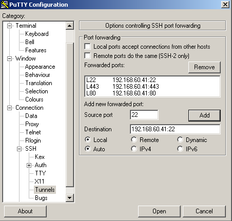
35) Abrir en XPadmin el Firefox, y acceder a la URL http://localhost. La respuesta nos permite comprobar que, en efecto, estamos consiguiendo acceder al servidor Apache de Debiantomatoexterno a través del túnel SSH vía Debianpasarela.
36) Sin embargo, si accedemos a http://localhost/tomatocart, nos encontraremos que sólo obtenemos una respuesta parcial del sistema Tomatocart.
Si accedemos en el Firefox al código fuente de la página,
veremos que el origen de este problema es que estamos recibiendo una
URL de referencia base que utiliza la dirección IP 192.168.60.41
(que, obviamente, no podemos acceder porque pertenece a la Red Externa).
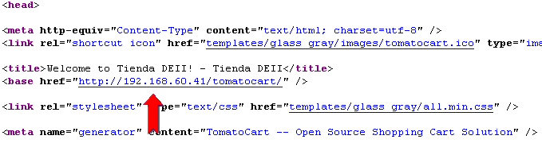
Podemos resolver este problema cambiando la configuración de
Tomatocar para que use (como debíamos haber hecho desde el
principio) el nombre del servidor, en lugar de la IP, para la URL.
37) En XPadmin, abrir una nueva instancia de putty y conectarse como root al hostname localhost; gracias al túnel para el puerto TCP/22 que hemos configurado en la conexión ssh que sigue activa contra Debianpasarela, la nueva instancia de putty consigue establecer una conexión ssh al servidor Debiantomatoexterno, lo que podemos comprobar ejecutando ifconfig para comprobar cual es la IP del servidor.
38) Editar el fichero /var/www/tomatocart/includes/configure.php y modificarlo como se muestra en la figura.
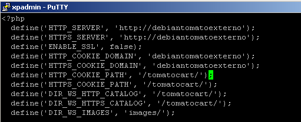
39) Modificar el fichero /etc/hosts como se muestra en la figura.
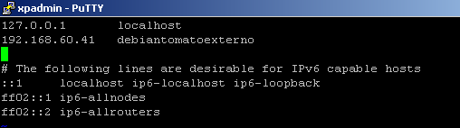
40) Vamos a aprovechar, y
cambiaremos también el hostname del servidor para que no siga
siendo el del template con el que lo desplegamos. Editar el fichero /etc/hostname, y cambiar su contenido a debiantomatoexterno
41) Ejecutar reboot para reinicar la máquina virtual. Perderemos la conexión ssh; cerrar por tanto esta instancia de putty.
42) Tras unos segundos, volver a abrir un putty contra el hostname localhost. Conectarse como root, y comprobar que, en efecto, el cambio de hostname en Debiantomatoexterno se ha realizado correctamente.
Ahora vamos a modificar el fichero de hosts en XPadmin para que el nombre DNS debiantomatoexterno se resuelva localmente a 127.0.0.1, y de esa forma la URL http://debiantomatoexterno utilice automáticamente el túnel para los puertos 80 y 443 que está proporcionando el cliente putty a través de la dirección localhost.
43) En XPadmin, hacer Inicio -> Ejecutar -> drivers. Ir al directorio etc, y editar el fichero hosts para añadir la línea mostrada en la figura.
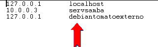
44) Cerrar la carpeta hosts.
45) Volver en XPadmin al Firefox, y acceder de nuevo a la URL http:/localhost/tomatocart. Tras una espera (debida a que desde la red interna no podemos acceder al servidor ajax.googleapis.com invocado por la página), veremos aparecer la tienda Tomatocart, con el aspecto correcto.
Con esto terminamos el Ejercicio. Una vez finalizada la
práctica, recordar que deben apagarse correctamente todas las
máquinas virtuales Debian encendidas en el ESX (haciendo login
en cada una y usando telinit 0), y luego debe apagarse correctamente también el propio ESX.